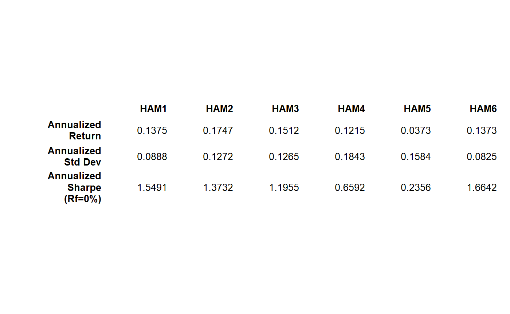

This function displays text output in a graphics window. It is the equivalent of 'print' except that the output is displayed as a plot.
replaceTabs.inner(text, width = 8) replaceTabs(text, width = 8) textplot(object, halign = "center", valign = "center", cex, max.cex = 1, cmar = 2, rmar = 0.5, show.rownames = TRUE, show.colnames = TRUE, hadj = 1, vadj = NULL, row.valign = "center", heading.valign = "bottom", mar = c(0, 0, 0, 0) + 0.1, col.data = par("col"), col.rownames = par("col"), col.colnames = par("col"), wrap = TRUE, wrap.colnames = 10, wrap.rownames = 10, ...) # S3 method for default textplot(object, halign = c("center", "left", "right"), valign = c("center", "top", "bottom"), cex, max.cex, cmar, rmar, show.rownames, show.colnames, hadj, vadj, row.valign, heading.valign, mar, col.data, col.rownames, col.colnames, wrap, wrap.colnames, wrap.rownames, ...) # S3 method for data.frame textplot(object, halign = c("center", "left", "right"), valign = c("center", "top", "bottom"), cex, max.cex = 1, cmar = 2, rmar = 0.5, show.rownames = TRUE, show.colnames = TRUE, hadj = 1, vadj = NULL, row.valign = "center", heading.valign = "bottom", mar = c(0, 0, 0, 0) + 0.1, col.data = par("col"), col.rownames = par("col"), col.colnames = par("col"), wrap = TRUE, wrap.colnames = 10, wrap.rownames = 10, ...) # S3 method for matrix textplot(object, halign = c("center", "left", "right"), valign = c("center", "top", "bottom"), cex, max.cex = 1, cmar = 2, rmar = 0.5, show.rownames = TRUE, show.colnames = TRUE, hadj = 1, vadj = NULL, row.valign = "center", heading.valign = "bottom", mar = c(0, 0, 0, 0) + 0.1, col.data = par("col"), col.rownames = par("col"), col.colnames = par("col"), wrap = TRUE, wrap.colnames = 10, wrap.rownames = 10, ...) # S3 method for character textplot(object, halign = c("center", "left", "right"), valign = c("center", "top", "bottom"), cex, max.cex = 1, cmar = 2, rmar = 0.5, show.rownames = TRUE, show.colnames = TRUE, hadj = 1, vadj = NULL, row.valign = "center", heading.valign = "bottom", mar = c(0, 0, 3, 0) + 0.1, col.data = par("col"), col.rownames = par("col"), col.colnames = par("col"), wrap = TRUE, wrap.colnames = 10, wrap.rownames = 10, fixed.width = TRUE, cspace = 1, lspace = 1, tab.width = 8, ...)
| text | in the function 'replaceTabs', the text string to be processed |
|---|---|
| width | in the function 'replaceTabs', the number of spaces to replace tabs with |
| object | Object to be displayed. |
| halign | Alignment in the x direction, one of "center", "left", or "right". |
| valign | Alignment in the y direction, one of "center", "top" , or "bottom" |
| cex | Character size, see |
| max.cex | Sets the largest text size as a ceiling |
| rmar, cmar | Space between rows or columns, in fractions of the size of the letter 'M'. |
| show.rownames, show.colnames | Logical value indicating whether row or column names will be displayed. |
| hadj, vadj | Vertical and horizontal location of elements within matrix
cells. These have the same meaning as the |
| row.valign | Sets the vertical alignment of the row as "top", "bottom", or (default) "center". |
| heading.valign | Sets the vertical alignment of the heading as "top", (default) "bottom", or "center". |
| mar | Figure margins, see the documentation for |
| col.data | Colors for data elements. If a single value is provided, all data elements will be the same color. If a matrix matching the dimensions of the data is provided, each data element will receive the specified color. |
| col.rownames, col.colnames | Colors for row names and column names, respectively. Either may be specified as a scalar or a vector of appropriate length. |
| wrap | If TRUE (default), will wrap column names and rownames |
| wrap.colnames | The number of characters after which column labels will be wrapped. Default is 10. |
| wrap.rownames | The number of characters after which row headings will be wrapped. Default is 10. |
| … | Optional arguments passed to the text plotting command or specialized object methods |
| fixed.width | default is TRUE |
| cspace | default is 1 |
| lspace | default is 1 |
| tab.width | default is 8 |
A new plot is created and the object is displayed using the largest font
that will fit on in the plotting region. The halign and
valign parameters can be used to control the location of the string
within the plotting region.
For matrixes and vectors a specialized textplot function is available, which plots each of the cells individually, with column widths set according to the sizes of the column elements. If present, row and column labels will be displayed in a bold font.
textplot also uses replaceTabs, a function to replace all tabs in a string with an appropriate number of spaces. That function was also written by Gregory R. Warnes and included in the 'gplots' package.
plot, text,
capture.output, textplot
# Also see the examples in the original gplots textplot function data(managers) textplot(table.AnnualizedReturns(managers[,1:6]))# This was really nice before Hmisc messed up 'format' from R-base # prettify with format.df in hmisc package # require("Hmisc") # result = t(table.CalendarReturns(managers[,1:8]))[-1:-12,] # textplot(Hmisc::format.df(result, na.blank=TRUE, numeric.dollar=FALSE, # cdec=rep(1,dim(result)[2])), rmar = 0.8, cmar = 1, max.cex=.9, # halign = "center", valign = "top", row.valign="center", wrap.rownames=20, # wrap.colnames=10, col.rownames=c("red", rep("darkgray",5), # rep("orange",2)), mar = c(0,0,4,0)+0.1) # # title(main="Calendar Returns")